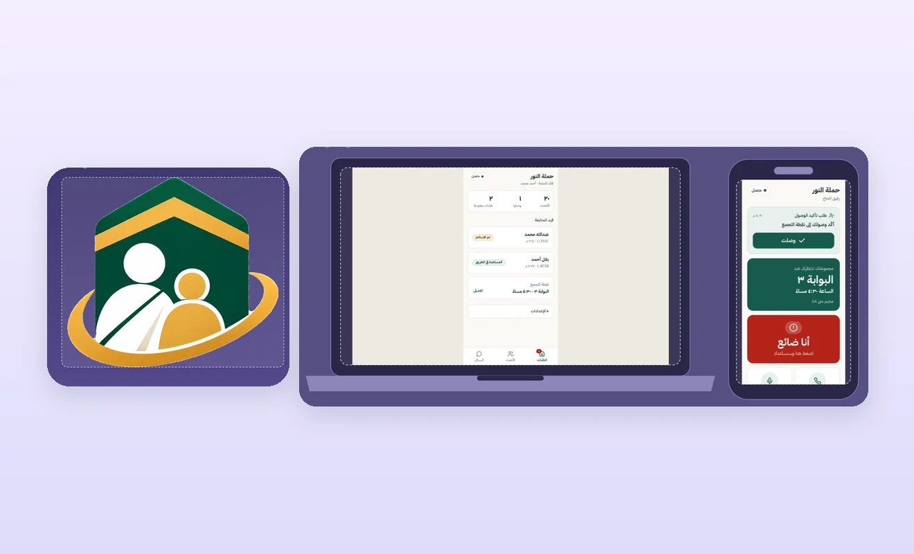
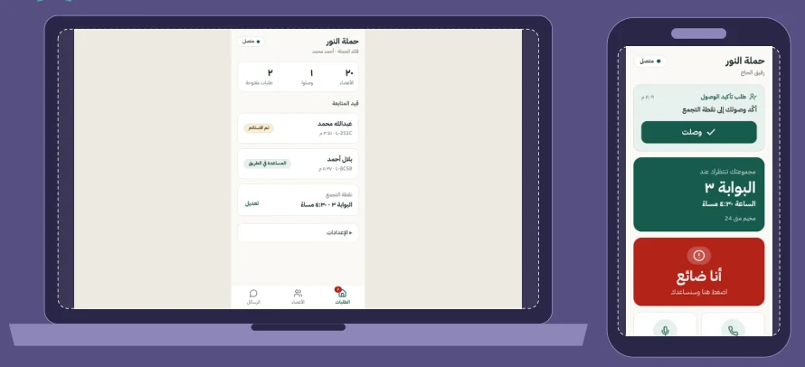

The problem
After completing a ritual, a pilgrim can become separated from the group in a crowd. A weak connection or a language barrier makes it harder to reach the campaign leader or find the meeting point.
Future of Hajj Innovations Camp · 2026
A way back to the group, even offline.
A multilingual companion for pilgrims who lose sight of their group. The app keeps the camp location on the phone and shows which direction to go.

After completing a ritual, a pilgrim can become separated from the group in a crowd. A weak connection or a language barrier makes it harder to reach the campaign leader or find the meeting point.
I led the team and prepared the app portion of the final pitch. I focused that part of the presentation on the moment a pilgrim gets separated and the few actions they need on their phone.
The “I’m lost” action shows direction and distance to a saved meeting point. Pilgrims can also find nearby services or ask their leader for help. The prototype keeps campaign data available offline and offers a ready-to-send SMS when a data connection drops.

